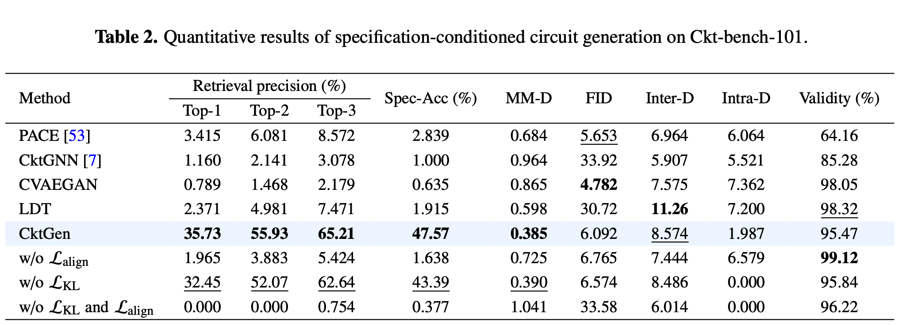
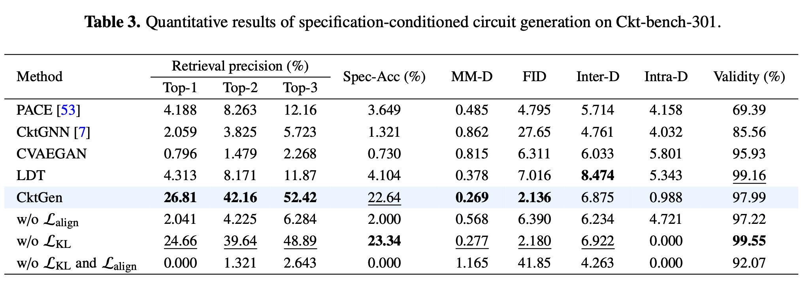
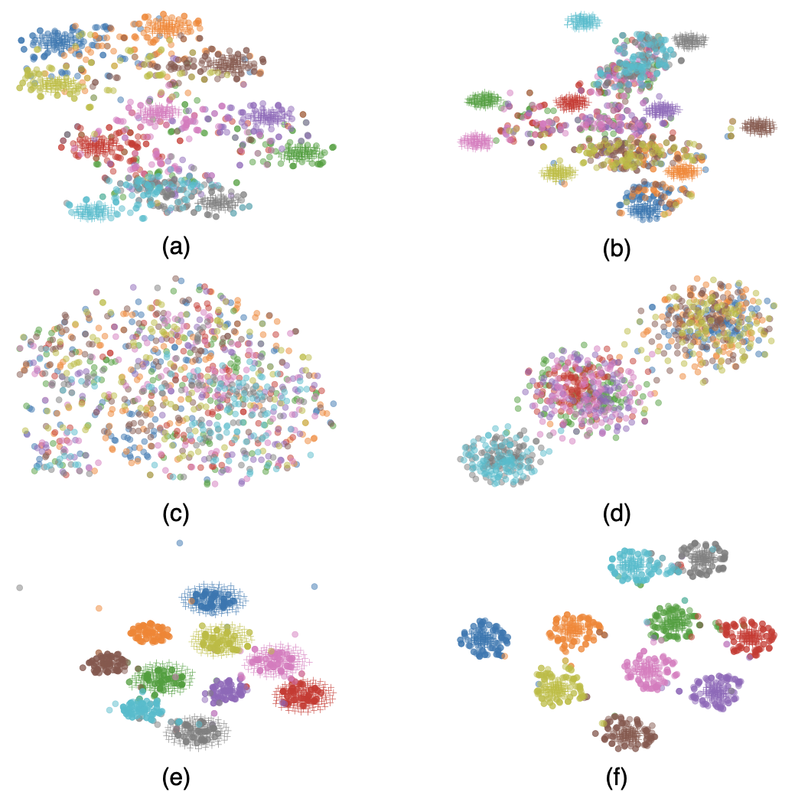
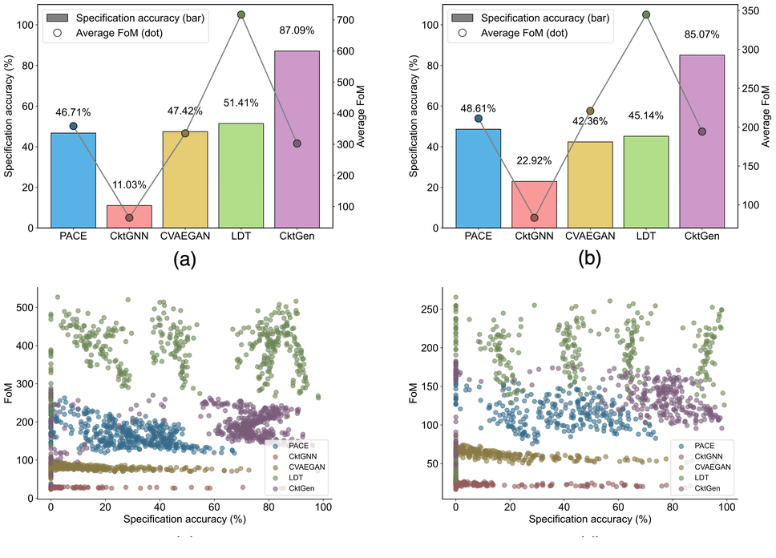

Every time the target Spec changes, most methods start over. CktGen doesn't — it generates circuits directly from the new requirements, then optimizes without retraining.
Abstract
Existing analog circuit automation methods treat every new target Spec as an independent optimization problem — when requirements change, the process restarts from scratch. CktGen takes a fundamentally different approach: it redefines analog circuit synthesis as Spec-conditioned generation (Spec2Ckt) — given a target Spec, directly generate the corresponding circuit. Three key contributions:
- New problem formulation. We are the first to formulate analog circuit synthesis as Spec-conditioned generation, moving beyond repeated fixed-target optimization.
- One-to-many Spec-to-circuit mapping. We learn the inherent one-to-many relationship between Specs and valid circuits through joint latent space alignment with triple alignment mechanisms.
- Test-time optimization without retraining. After generation, CktGen continues searching for better designs under new target constraints — no retraining required.
On Open Circuit Benchmark, CktGen achieves 47.57% Spec-Acc on Ckt-Bench-101 where all baselines stay below 3%, and reaches up to 87.09% Spec-Acc in automated design.
Method
The central challenge is that Spec-to-circuit is inherently one-to-many: the same Spec can correspond to multiple valid designs. Naively conditioning on Spec collapses this diversity and only learns an "average answer." CktGen solves this by mapping Specs and circuits into a jointly aligned latent space through triple alignment (contrastive learning + classifier guidance + feature alignment), preserving design diversity while ensuring Spec-circuit correspondence. An autoregressive decoder then generates complete circuits — topology, parameters, and connections — directly conditioned on the target Spec from the first token.
Beyond generation, CktGen introduces test-time optimization: a multi-armed bandit algorithm searches the learned latent space for designs that satisfy target Spec constraints while maximizing FoM — without retraining the model.
Results
Specification-Conditioned Generation
The key metric is Spec-Acc: does the generated circuit actually satisfy the target Spec? On Ckt-Bench-101, CktGen achieves 47.57% Spec-Acc — all baselines stay below 3%. On Ckt-Bench-301, it reaches 22.64% with strong FID and structural validity. Baselines can produce circuits that look plausible in aggregate (reasonable FID), but fail when the task requires generating a circuit that matches a specific target Spec. This gap reflects a qualitative difference: CktGen is the first method that demonstrates controllable, Spec-conditioned analog circuit generation.


Tables 2 and 3. Quantitative results on specification-conditioned generation for Ckt-Bench-101 and Ckt-Bench-301.
The t-SNE visualization further supports this: CktGen learns a structured design space organized by Spec, with clear inter-class separation and tight intra-class clustering. This indicates the model captures meaningful Spec-circuit correspondence rather than memorizing individual samples.

Figure 3. t-SNE visualization of the learned latent space. CktGen shows clearer inter-class separation and tighter intra-class grouping.
Automated Design with Target Specifications
Beyond conditioned generation, we evaluate a more practical setting closer to real design: given target Spec thresholds (gain, bandwidth, phase margin), generate circuits that satisfy all constraints while maximizing overall FoM. CktGen achieves 87.09% and 85.07% Spec-Acc on Ckt-Bench-101 and Ckt-Bench-301, with competitive FoM. Crucially, the test-time optimization adapts to new target Specs directly — no retraining required.

Figure 4. Automated design results under target specification constraints. CktGen reaches the highest specification accuracy on both datasets while keeping competitive FoM.
BibTeX
@article{hou2025cktgen,
title = {CktGen: Automated Analog Circuit Design with Generative Artificial Intelligence},
journal = {Engineering},
year = {2025},
issn = {2095-8099},
doi = {https://doi.org/10.1016/j.eng.2025.12.025},
url = {https://www.sciencedirect.com/science/article/pii/S2095809925008148},
author = {Yuxuan Hou and Hehe Fan and Jianrong Zhang and Yue Zhang and Hua Chen and Min Zhou and Faxin Yu and Roger Zimmermann and Yi Yang},
}